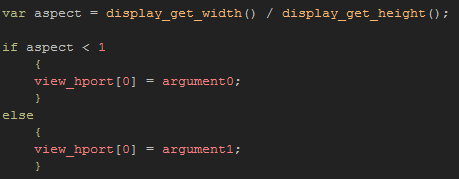
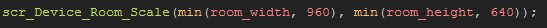

Tutorial
Page 13 of 15
Devices Part III
Now lets adapt our script slightly so that it accepts different base sizes and adapts to a smaller room than the base size. Currently, if your room is smaller than the size 640 x 960, then the room will be
centered in the view with a large surrounding area set to either the room colour or the border colour if you are drawing one. Obviously this is not what you want!
What about changing the core size? Why not just leave it as it is? Well, if you know that your target platform has a fixed range of display resolutions (like the iPhone or Windows8 Phone platforms), then you
can optimise the script to fit those aspect ratios better.
So, let's go back and open up our script scr_Device_Room_Scale and change it to:

The arguments here are the base width and height for your room to be scaled to, and so when you call the script you would set them using something like the following:

Copy the above into the create event of our test object obj_Devices_Room_Scale and move the room rm_Devices_2_4 up to the top of the room asset list. Now run the game again and note how
the smaller room is scaled up to fit the maximum display size available while maintaing it's original aspect ratio.
This step is important, as it is the basis on which we will build the final part of this tutorial, which is to scale the view to fit the display, while using large rooms that require view scrolling.
Click on the Next button to go to the next page of the tutorial.